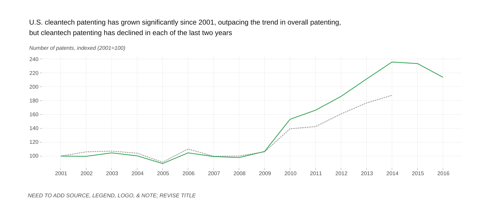
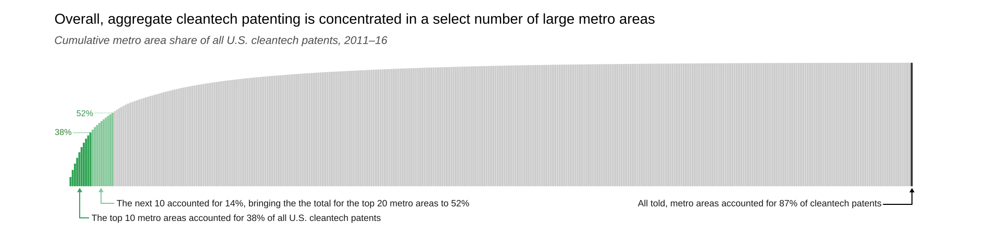

DRAFT - NOT FOR CIRCULATION
President Trump is right to say that energy industries are important to “making America great again.” And so too are Energy Secretary Rick Perry and Secretary of State Rex Tillerson right to stress the importance of clean energy innovation.
Innovation is crucial for long-term economic development. Moreover, the development of low-carbon technology holds great potential to spark high-quality job growth in U.S. regions, support the manufacturing sector, and improve the trade balance by improving American competitiveness.
Already the sector constitutes a multibillion-dollar business opportunity, with the global advanced energy market alone reaching a record $1.4 trillion in 2015.
And yet, there is a problem. At just the moment when some indicators suggest the U.S. clean energy innovation enterprise may be hitting a flat spot, the Trump administration has proposed draconian federal budget cuts that raise new concerns about the future of the nation’s commitment to low-carbon economic development. These cuts, proposed though Trump’s “skinny budget,” could have serious repercussions for virtually all of the nation’s energy innovation programs.
Which is why—as Congress turns to shaping the 2018 budget—it is worth assessing the status of the U.S. cleantech innovation enterprise, both nationally and regionally, as it is unfolding across 14 technology areas and the nation’s diverse metropolitan areas.
To that end, this first brief of two on cleantech innovation—a forthcoming analysis will examine venture capital (VC) dynamics—looks at technology patenting activity as a key indicator for monitoring the development of new technologies, as represented by the volume and topics of new patents resulting from public and private funded research.
What do these data show? Overall, the data show that even as cleantech patenting has grown over the years, serious concerns remain about the competitiveness of the U.S. cleantech innovation scene. At the same time, while much of America’s patenting takes place in relatively few large metropolitan areas, significant cleantech innovation activity extends into all regions of the country. That breadth underscores both the relevance and potential of low carbon innovation.
Taken together, the findings of this brief provide a mixed picture of U.S. cleantech innovation that runs as follows:
U.S. cleantech patenting has grown significantly since 2001, outpacing growth in all U.S. patents, but may now be flagging
Cleantech patenting is concentrated in relatively few technology categories

U.S. cleantech patenting is both concentrated in large metropolitan areas and widely distributed across diverse regions of the countryg
The nation’s metro areas, both big and small, display distinctive profiles in cleantech patenting
The goal of this interactive element is to take the user on a tour of the patenting categories to see how patenting within each category is distributed among metro areas and to see who the major players are.
The bubble cloud will morph between categories as the user scrolls down the page. Importantly, I will add the ability to hover over each bubble to get more information and I will annotate each bubble cloud as the user scrolls, calling out the major metro players or high intensity metros, and/or important features of the distribution (e.g. if it is dominated by one metro area).
The share of U.S. cleantech patents owned by foreign companies has grown over the years, raising concerns about the global competitiveness of U.S. companies
[ADD GRAPHIC]
Conclusion
Given the size of the global clean energy economic opportunity, the United States can ill afford to relinquish its lead on innovation in the burgeoning global cleantech market to China or other countries. For that reason, Congress should set aside the skinny budget and draw on years of bipartisan support for energy innovation to coalesce around a core list of minimum viable supports for low-carbon innovation and growth. Most crucial will be provisions to maintain clean energy R&D appropriations at viable levels; maximize the impact of the nation’s 17 national energy laboratories; and preserve the Advanced Research Projects Agency (ARPA-E) while maintaining and scaling up the nation’s energy innovation hubs and institutes. For their part, states and regions can and must step up to invest more robustly on their own in low-carbon innovation, just as must the private sector, which must argue more forcefully for essential federal supports even as it moves to shoulder more of the burden itself.
In sum, Congress as well as the private sector and states and regions stand at a critical juncture this spring. With the economic potential of cleantech innovation widely acknowledged, the question has become: Will the U.S. compete?